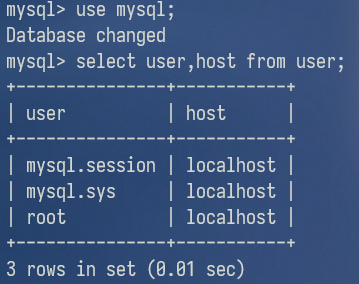
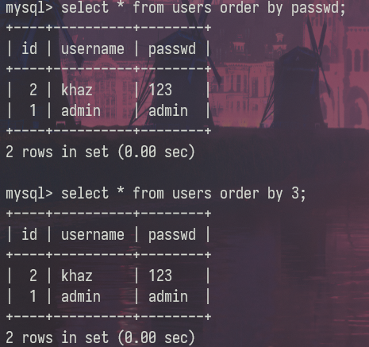
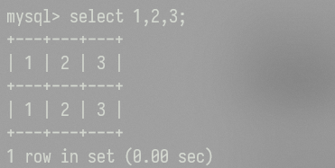
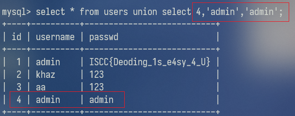
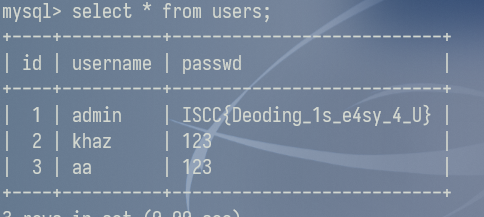
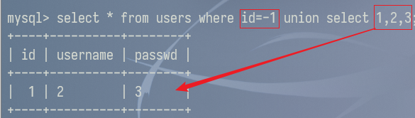
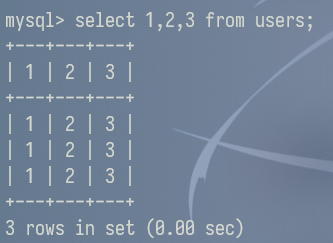
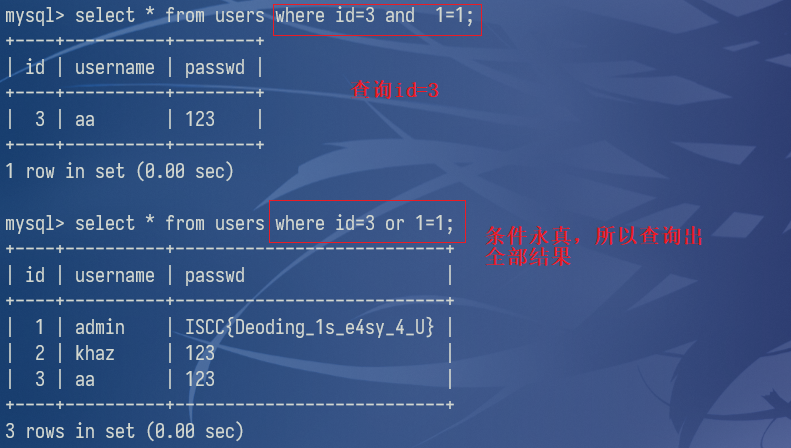
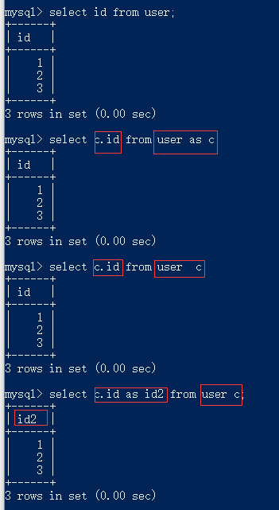

Mysql登录
命令行参数
-u username 指定数据库用户名
-p password 指定数据库密码
-e 指定要运行的sql语句
-D 指定数据库名
-P 端口
登录
mysql -uroot -proot [-P3306 -h127.0.0.1]
修改密码
set password for root@localhost = password('xxx');
开启远程连接
# 修改配置文件
bind-address = 0.0.0.0
# 为需要远程登录的用户赋予权限
grant all privileges on *.* to 'root'@'%' identified by '123' with grant option;
flush privileges;
注：ip处填%的话则表示所有ip都可以访问
# 查看用户与主机关系
use mysql;
select user,host from user;

mysql8
https://blog.csdn.net/llf_cloud/article/details/83141338
退出
exit;
quit;
\q;
基础知识
条件查询
where id xxx
xxx：
| 运算符 | 解释 | ||
|---|---|---|---|
| = | 等于 | ||
| <> ，!= | 不等于 | ||
| <，<= | 小于，小于等于 | ||
| >，>= | 大于,大于等于 | ||
| in()，not in() | 是否在数组中 | ||
| and , && | 逻辑与 | ||
| or , \ | \ | 逻辑或 | |
| like '%xx%' | 模糊查询 | ||
| is null , is not null | 是否为空 | ||
| regexp | 正则匹配 | ||
| is between x and y | 在x和y之间 |
常用表
注意sys 库是在MySQL5.6及以上版本才有的
记录所有数据库及表
information_schema.tables sys.schema_table_statistics_with_buffer sys.x$schema_table_statistics_with_buffer 字段：table_schema：数据库名称 table_name：数据库下的所有表mysql.innodb_table_stats mysql.innodb_index_stats 字段：database_name：数据库名称 table_name：数据库下的所有表记录所有数据库
information_schema.schemata 字段：SCHEMA_NAME：数据库名记录含有自增id字段的数据库及表
sys.schema_auto_increment_columns 字段：table_schema：数据库名称 table_name：数据库下的所有表记录所有字段
information_schema.columns 字段：table_name：表名 column_name：表下的所有字段名配置信息
@@character set_ database：字符集 @@hostname：计算机名 @@version_compile_os：系统版本 @@basedir:mysql路径 @@datadir:myslq data存放路径 @@sql_mode：sql模式@是用户变量，@@是系统变量
常用函数
select user(); 查看当前MySQL登录的用户名
select database(); 查看当前使用的数据库名
select version(); 查看当前MySQL版本
# 查看当前用户权限
SELECT * FROM mysql.user WHERE user = CURRENT_USER();
SHOW GRANTS FOR CURRENT_USER();
group_concat(字段名) 查看所有字段名，默认分隔符为,
length() 获得长度
concat(str1,str2) 连接str1和str
mid(str,a,length) 从a开始截取str字符length长度
substr(str,a,length) 从a开始截取str字符length长度
left/right(str,length) 返回最左边/最右边的length长度字符
ord(string) 返回字符串第一个字符的ascii码值
ascii(str) 返回字符的ascii码
rand()随机数
常用操作语句
创建表
CREATE TABLE IF NOT EXISTS `users`(
`id` INT UNSIGNED AUTO_INCREMENT,
`username` VARCHAR(10) NOT NULL,
`passwd` VARCHAR(40) NOT NULL,
PRIMARY KEY ( `id` )
)ENGINE=InnoDB DEFAULT CHARSET=utf8;
AUTO_INCREMENT：自增
PRIMARY KEY：主键
对数据库的增删改查
增 create database 数据库名
删 drop database 数据库名
查 所有数据库 show databases
改 rename database 旧名 to 新名
对数据表的增删改查
增 create table 数据表名(id int,name char(10))
参数形式：字段名 字段类型
删 drop table 数据表名
查 show tables
改 alter table 旧名 to rename 新名
对表数据的增删查改
增 insert into 表名(列1，列2 ... ) values(值1，值2 ... )
删 delete from 表名 where 列名 = 值
查 所有内容 select * from 表名
查看表的结构 DESC 表名 / show columns from 表名
条件下所有列 select * from 表名 where 条件
条件下部分列 select 列1,列2,...,列n from 表名 where 条件;
改 修改数据 update 表名 set 列名=新值 where 条件
REPLACE INTO table_name VALUES(主键,value..)
修改列名 alter table 表名 change 旧列名 新列名 varchar(长度)
replace into，需要更改一整条数据，不能只更改其中某列。
- 如果待写入数据已经存在，则先删除该行数据，然后插入新的数据。
- 如果待写入数据不存在，则直接插入新数据。
mysql> select * from users;
+----+----------+--------+
| id | username | passwd |
+----+----------+--------+
| 1 | khaz | 123 |
| 2 | khaz2 | 1234 |
+----+----------+--------+
2 rows in set (0.00 sec)
mysql> replace into users values(1,'passwd');
ERROR 1364 (HY000): Field 'username' doesn't have a default value
mysql> replace into users values(1,'khaz3','passwd');
Query OK, 2 rows affected (0.00 sec)
mysql> select * from users;
+----+----------+--------+
| id | username | passwd |
+----+----------+--------+
| 1 | khaz3 | passwd |
| 2 | khaz2 | 1234 |
+----+----------+--------+
2 rows in set (0.00 sec)
对用户的增删查改
增 insert into users(username,password) values('khaz','wuhu')
create user '用户名'@'来源地址' identified by '密码'
删 drop user 用户名
查 select user()
改 修改用户名 rename user 旧用户名 to 新用户名
修改密码 SET PASSWORD FOR 用户名 = PASSWORD('abc123');
sql注入相关解释
order by
order by语句用于根据指定的列对结果集进行排序，支持字段名和字段位置

可选参数(排列方式):
- 升序(ASC) 默认
- 降序(DESC)
在sql注入中的使用：
判断字段数：当字段位置不存在时就会报错
order by注入
limit
用于分页
select* from article LIMIT 1,3
select * from article LIMIT 3 OFFSET 1
上面两种写法都表示取 2、3、4 三条条数据：
1.当 LIMIT 后面跟两个参数的时候，第一个数表示要跳过的数量，后一位表示要取的数量
2.当 LIMIT 和 OFFSET 组合使用的时候，LIMIT 后面只能有一个参数，表示要取的的数量，OFFSET表示要跳过的数量 。
select* from article LIMIT 3
表示取前三条数据
当 LIMIT 后面跟一个参数的时候，该参数表示要取的数据的数量。
在注入中的使用：
使用group_concat()批量查询输出结果长度有限制，需要使用linmit一条一条获取或使用concat()拼接得到结果 limit 0,1 limit 1,1 limit 2,1 ....
union select与select
union select语句用来合并两个或多个 SELECT 语句的结果集。所以union select可以用来查询其他表。
select 字段值1 from 表1 union select 字段值2 from 表2
union特性
1.union select只能查询两个表中共同都有的字段，如果一个字段在另外一个表中没有，就会报错
如users表比users2表多了school字段，查询users表中的school和users2表中的address，因为users2表中没有school字段，所以报错
2.(union) select 查询的字段数要一致，否则会报错
所以需要先用order by来判断字段数
3.union 自带去重功能（distinct的功能）
如果不想要去重可以使用union all
select 1,2,3
select时不写后面的表名，这时select实际上没有向任何一个数据库查询数据，即查询命令不指向任何数据库的表。返回值就是我们输入的这个数组。

通过这个和union select
构造临时数据

users表中并没有要查询的数据,但是却返回了我们构造的数据!

而在下一次查询中，这个我们自定义的数据不存在，说明通过这样方式创建的数据的存活周期只在其查询语句执行时
所以通过上述操作就可以临时构造一个用户，达到登录的效果
联合查询注入
需要将前面的select语句设置为假，才能使用后面的union select 1,2,3来判断哪一个字段值是回显的，是可以利用的。（原因是一般获取的是第一个结果，而我们构造的union select 1,2,3在之后）
id=-1 union select 1,2,3

select+XX和表名
列数取决于我们输入的数字个数，行数取决于表原来的行数。

注释符

单行注释符
--+
实质上--是起到注释的作用，但是在sql中用--注释后面必须加一个空格--才生效#
在URL中#表示锚点，带上#不会请求后端路由，而是刷新前端路由，所以 测试一般用URL编码后的%23
多行注释符
/ /
``` 用于注释多行 /*
*/
```
and 与 or

反引号
反引号是 mysql 的转义符，只要你不在列名、表名中使用 mysql 的保留字或中文，就不需要转义。 其他数据库也同样有保留字，如果使用的话也同样需要转义，只是转义符不同而已。
#假如表A中有一列名为select，查询该列
select select from A; #错误
select `select` from A; #正确
#假如存在表flag，用desc(describe)查询该表信息
desc flag A; #显示flag表信息，别名为A
desc `flag` `A` #与上述语句相同
MySQL 关键字和保留字汇总（MySQL 8.0）：
https://blog.csdn.net/m0_56921622/article/details/122975904
as
AS命令用于使用别名重命名列或表。
别名仅在查询期间存在。
重命名表名
select c.ID from users as c
重命名列名
select c.ID as ID2 from users as c
注：可以把as省略，即select c.ID from users c等价于select c.ID from users as c

在sql注入可以用于无列名注入